Erro Glassfish
Resumo
Celulares param de sincronizar.
Imagem do erro
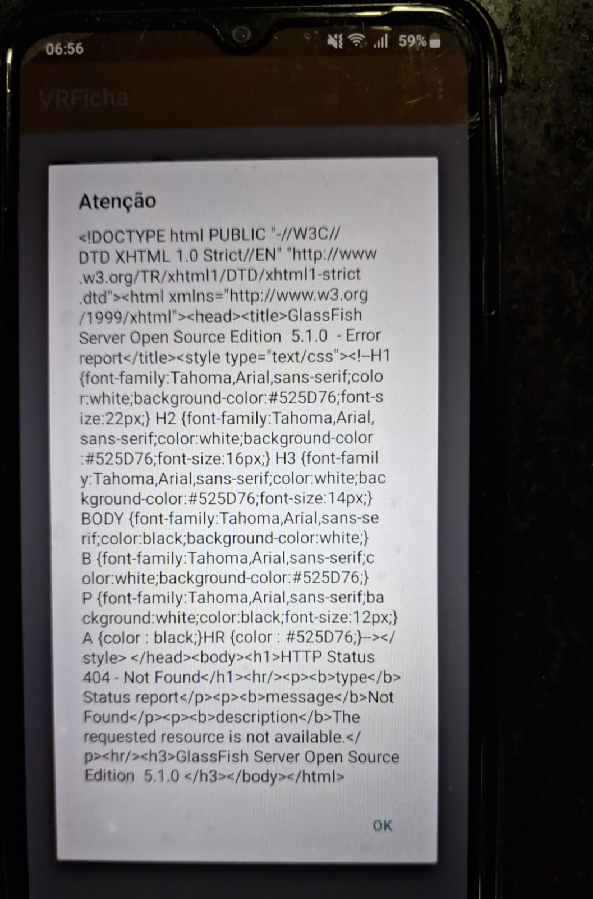
Causa
Erro na inicialização do arquivo VRFichaServer.war.
Solução
-
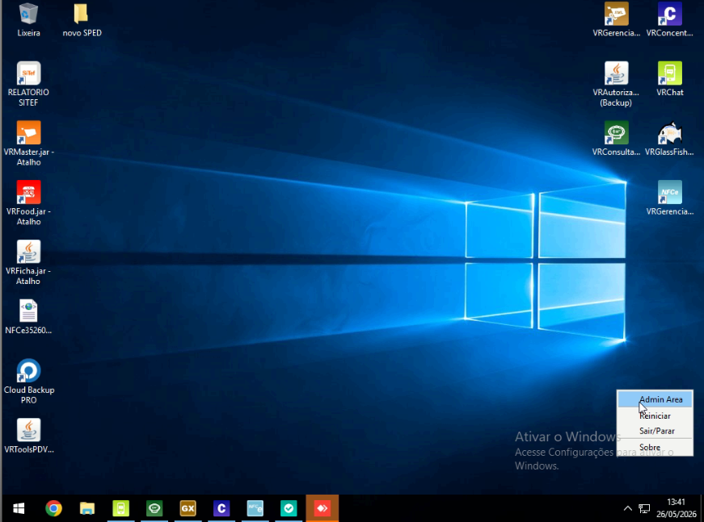
- Entrar no Servidor
- Ir até o Ícone do Glassfish (Símbolo na Barra de Tarefas: ^)
- Clicar com o botão direito no Ícone do Glassfish
- Clicar em Admin Area
-
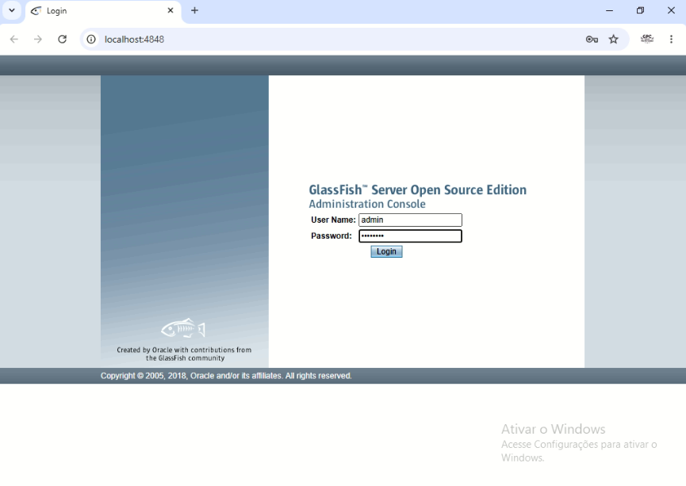
- Acessar com usuario e senha
-
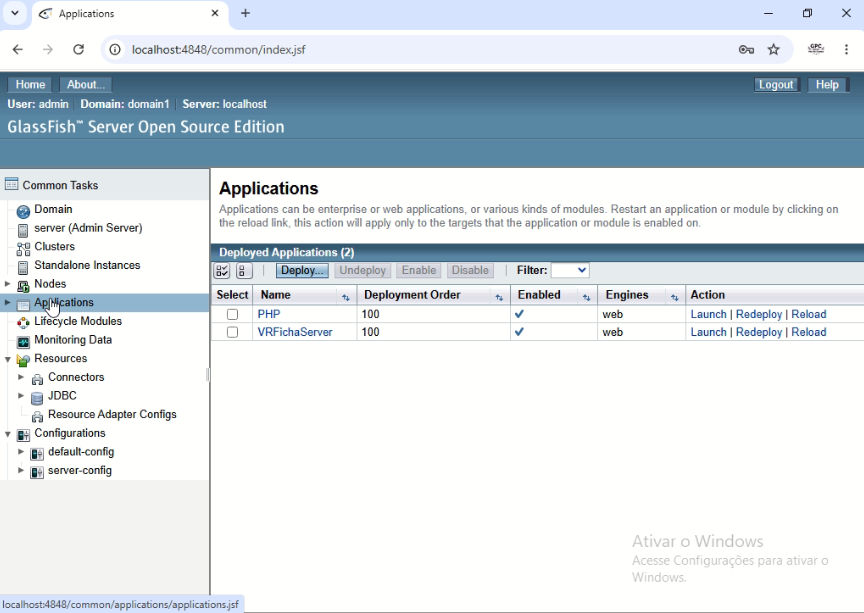
- Clicar em Applications
-
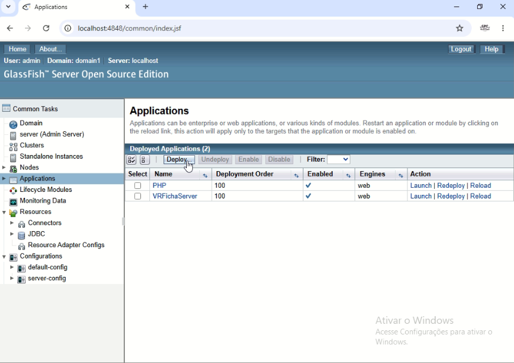
- Clicar em Deploy
-
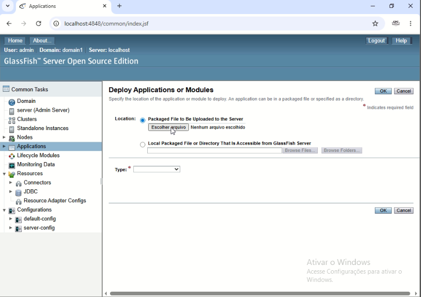
- Clicar em Escolher arquivo
-
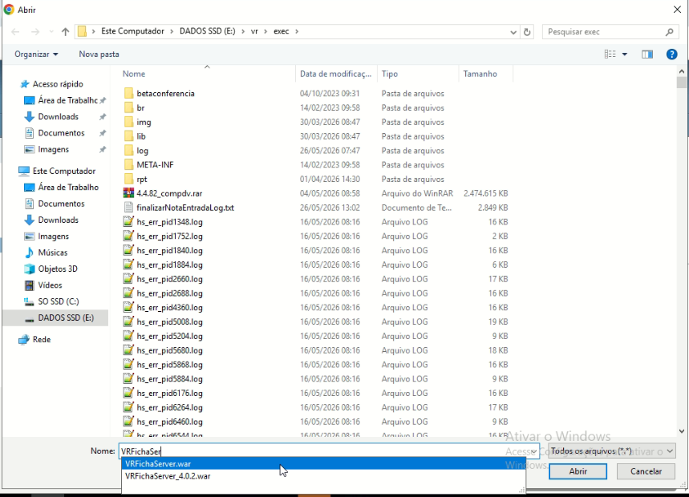
- Digitar "VRFichaServer.war" em nome
- Selecionar o arquivo VRFichaServer.war
-
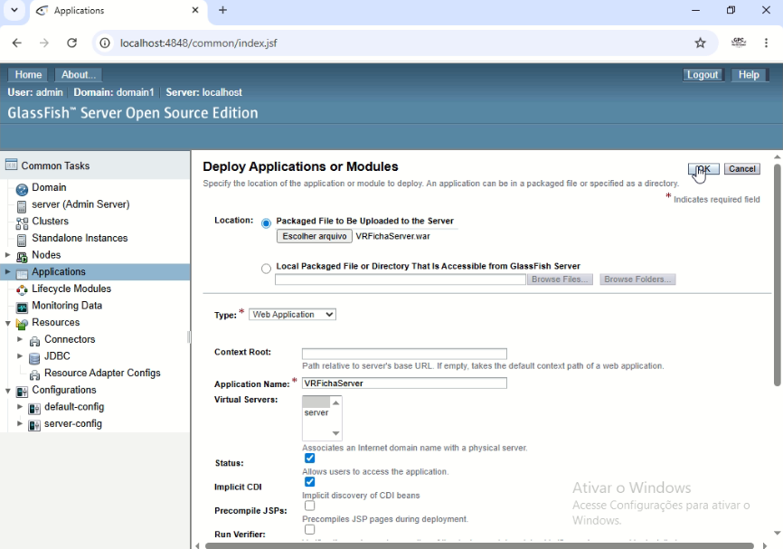
- Clicar em Ok
-
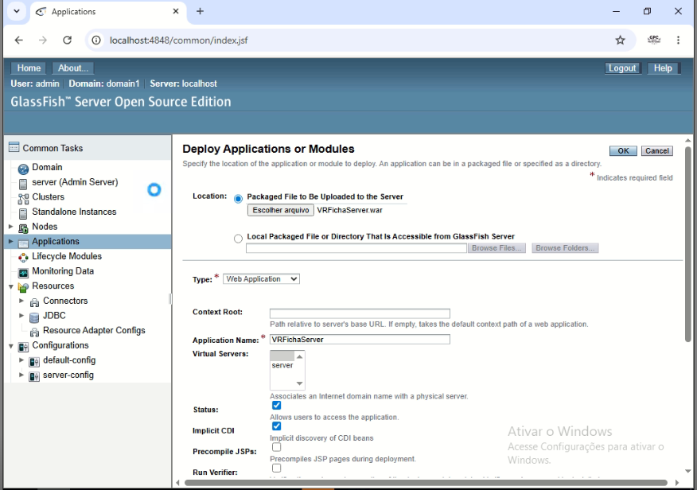
- Aguardar até carregamento finalizar
- Até a rodinha parar de girar
- Tem como verificar mantendo o mouse no local indicado
Verificar se voltou
-
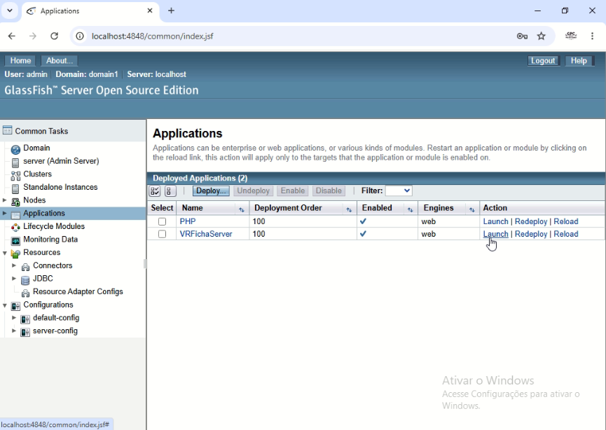
- Clicar em Launch na linha do VRFichaServer
-
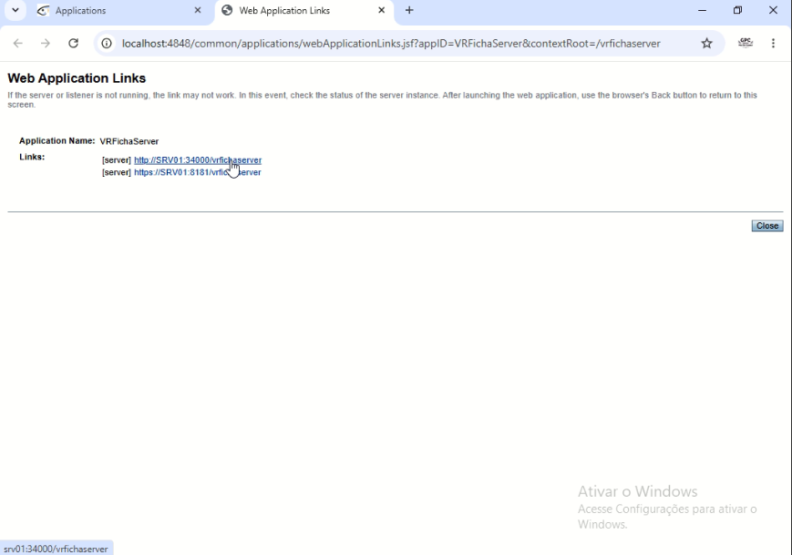
- Clicar em http://SRV01:34000/vrfichaserver
-
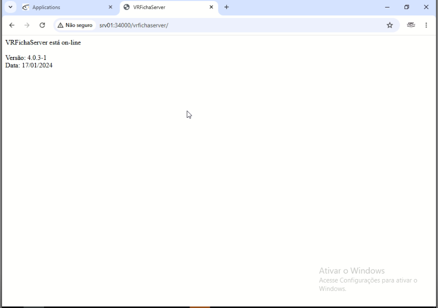
Se aparecer a mensagem da imagem, esta tudo certo
Observações
Caso algo não esteja da forma descrita, me informar.